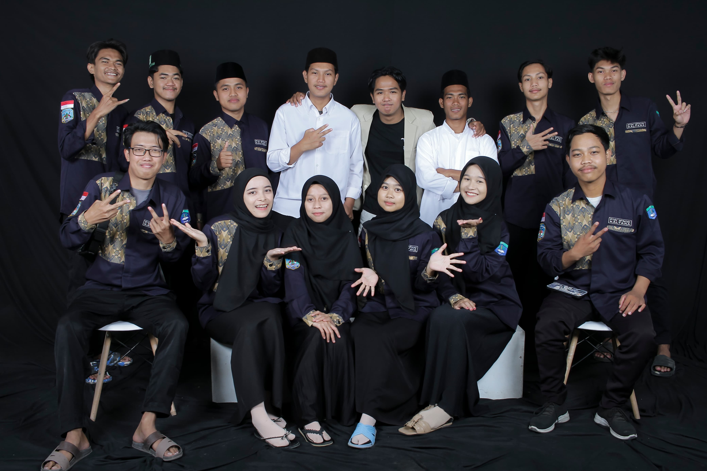

(Ikatan Pelajar Nahdlatul Wathan Kalimantan Utara)
Periode 2025-2029
IPNW SETIA PADA NW MAULANA
KAMI BENIHAN NAHDLATUL WATHAN YANG SETIA!
Nahdlatul Wathan merupakan salah satu organisasi keagamaan dan kemasyarakatan terbesar di Indonesia yang memiliki akar kuat dalam bidang pendidikan, sosial, dan dakwah Islam. Didirikan oleh al-Magfurulah Maulana Syaikh TGKH. Muhammad Zainuddin Abdul Madjid di Nusa Tenggara Barat, Nahdlatul Wathan terus berkembang dan menyebar ke berbagai penjuru Nusantara, termasuk wilayah Kalimantan. Seiring meningkatnya semangat pelajar di Kalimantan Utara untuk berperan aktif dalam kegiatan keagamaan, pendidikan, dan sosial, terbentuklah Ikatan Pelajar Nahdlatul Wathan (IPNW) sebagai wadah kaderisasi pelajar di bawah naungan organisasi induk. Kehadiran Pimpinan Wilayah IPNW Kalimantan Utara menjadi jawaban atas kebutuhan akan regenerasi kader pelajar yang militan, berakhlakul karimah, dan memiliki semangat kebangsaan serta cinta tanah air. PW IPNW Kalimantan Utara dibentuk sebagai respons atas dinamika pelajar yang terus berkembang, terutama di tengah tantangan globalisasi dan kemajuan teknologi informasi. Melalui pendekatan yang adaptif dan tetap berlandaskan nilai-nilai Islam Ahlussunnah wal Jamaah, organisasi ini berkomitmen mencetak generasi pelajar yang unggul dalam intelektualitas, spiritualitas, dan sosial kemasyarakatan. Selain itu, hadirnya PW IPNW Kalimantan Utara juga memperkuat jejaring Nahdlatul Wathan di kawasan strategis Kalimantan yang berbatasan langsung dengan negara tetangga. Ini sekaligus menjadi langkah strategis dalam memperluas dakwah, mempererat ukhuwah Islamiyah, serta memperkokoh identitas ke-Indonesiaan di wilayah perbatasan.
VISI : Membentuk kader yang berakhlak mulia, berilmu,dan terampil dalam berorganisasi juga membentuk karakter kader yang saling merangkul satu sama lain.
MISI : membangun rasa solidaritas yang tinggi dan bertanggung jawab antar anggota, memperbaiki dan melaksanakan program yang belum tercapai atau terlaksana.